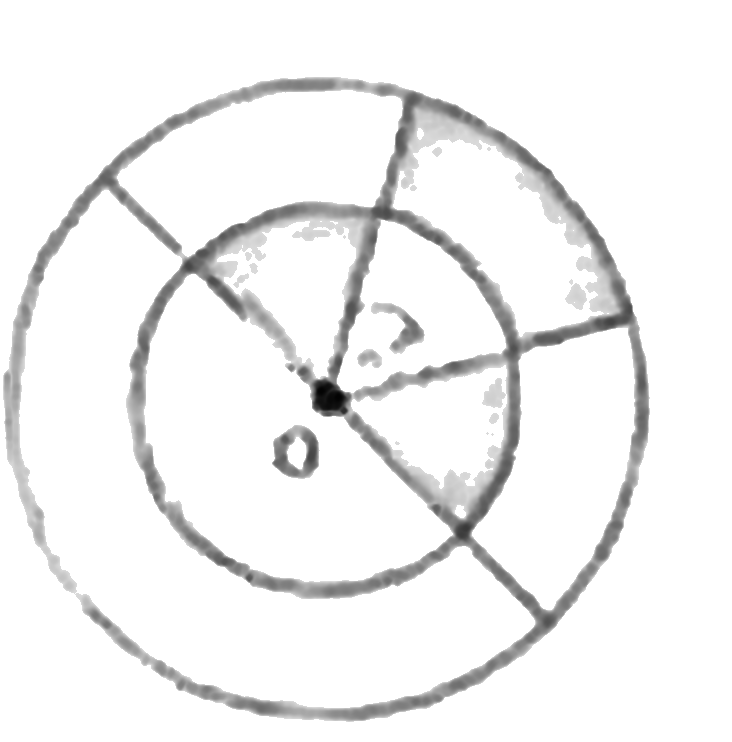
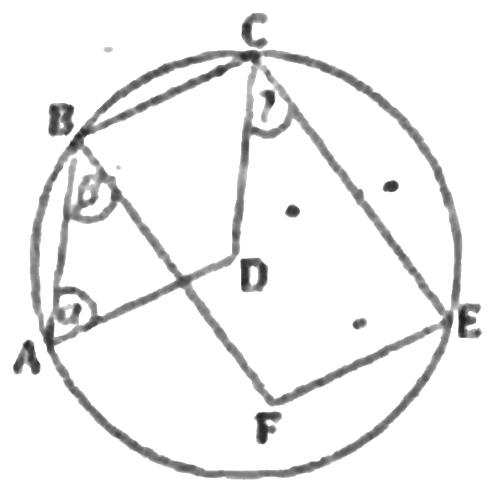
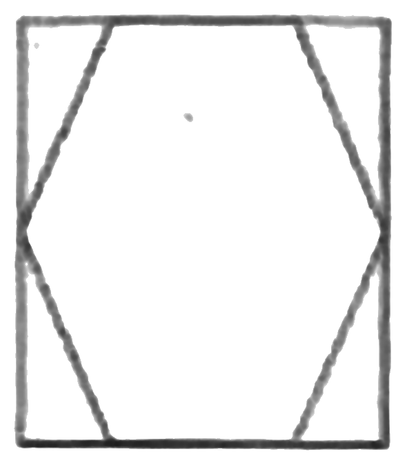
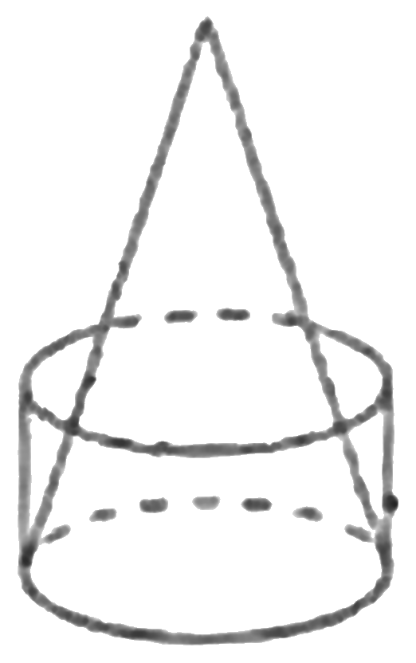

נתון: 0 < a, b, c ; a − 1c = ca + 1 ; b − 1a = ab + 1
מה מהבאים נכון בהכרח?
בעת נסיעה במהירות של 50 קמ"ש מנוע של רכב צורך 1 ליטר עבור כל 10 ק"מ של נסיעה. כאשר הרכב מאיץ ונוסע מהר יותר, צריכת הדלק של הרכב משתנה ל־1 ליטר עבור כל 5 ק"מ של נסיעה. בשעה 8:00 אילן יצא לנסיעה ברכבו. עד 8:30 נסע אילן במהירות של 50 קמ"ש, ולאחר מכן, עד השעה 10:00 האיץ ונסע במהירות של 80 קמ"ש.
כמה דלק צרך רכבו של אילן בנסיעה זו?

בסרטוט שלפניכם הנקודה O היא מרכז שני המעגלים. רדיוס המעגל הגדול הוא R ס"מ ורדיוס המעגל הקטן הוא r ס"מ.
על פי נתונים אלו ונתוני הסרטוט, מה גודל השטח הכהה שבסרטוט (בסמ"ר)?

בסרטוט שלפניכם ABCD הוא מעוין ו־BCEF מקבילית. הקודקודים A, B, C ו־E מונחים על היקפו של המעגל.
על פי נתונים אלו ונתוני הסרטוט, ∢DCE = ?
נתון: x מתחלק ללא שארית ב־12. x מתחלק ללא שארית ב־15.
במה מהבאים מתחלק x בהכרח?

בסרטוט שלפניכם מלבן החוסם משושה משוכלל.
על פי נתונים אלו ונתוני הסרטוט, מה היחס בין השטח הכהה לשטח המשושה?
תות הנח המון החליט לצבוע מחדש את קירותיה של הפירמידה המשולשת שלו. כל מקצועותיה של הפירמידה שווים, ובסיסה של הפירמידה הוא משולש שווה צלעות שאורך צלעו הוא 20 מטרים. לשם כך הוא שכר צוות של 10 צבעים, בעלי הספק זהה, שכל אחד מהם צובע 10 מטרים רבועים ב־4 דקות.
לכמה זמן (בשעות) זקוקים צוות הצבעים כדי לצבוע את הפירמידה כולה?
⚠ ייתכן שהתשובות הן בדקות ולא בשעות.
נתון: 0 < yˣ < 1
איזה מהמצבים הבאים יתכן?
בקערה יש 5x ליטרים של תמיסת מלח בריכוז של 30%. מה יהיה ריכוז תמיסת המלח אם מהקערה יתאדו 2x ליטרים של מים?

בסרטוט שלפניכם חרוט המונח בתוך גליל. נתון: גובהו של החרוט גדול פי 2 מגובהו של הגליל.
על פי נתונים אלו ונתוני הסרטוט, נפח החרוטנפח הגליל = ?